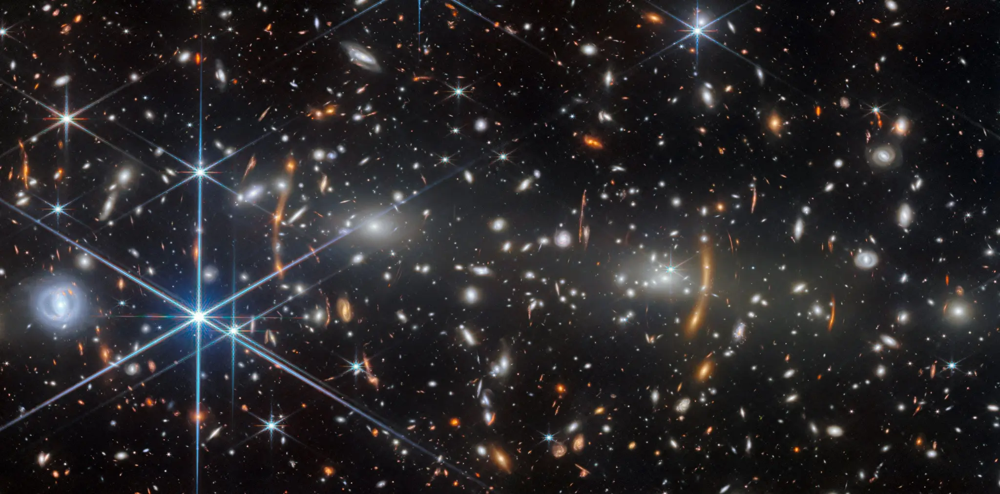
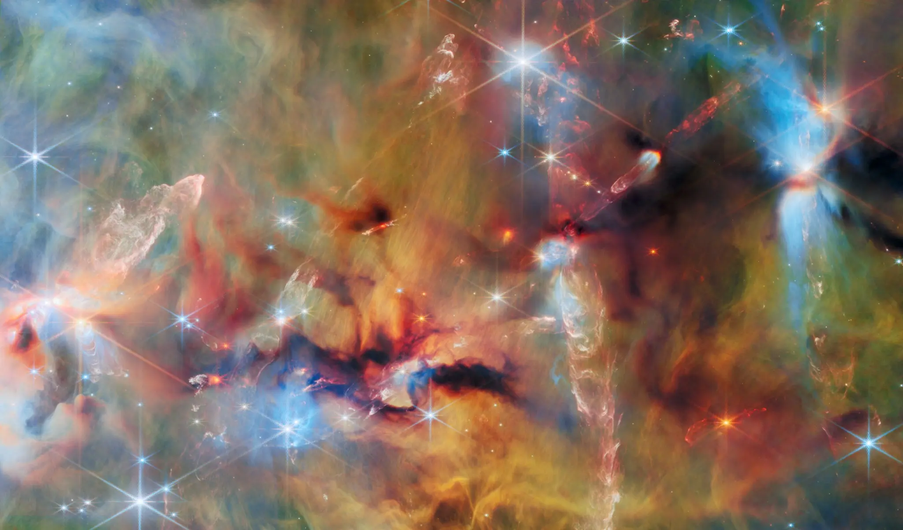

Recruit
Activate trusted networks and identify hosts positioned to reach new and underserved audiences.

Case study 02 · National activation
Webb Community Events turned a historic mission milestone into locally led participation—supported by national infrastructure, trusted community hosts, and direct access to scientists and engineers.
MACS J0553.4-3342 · ESA/Webb, NASA & CSA, S. Fujimoto · 2026
Trace the activation system ↓
The challenge
Webb’s launch and First Images would command worldwide attention. Attention alone, however, does not create participation—or give a community host the confidence to interpret unfamiliar science in a live public setting.
The program needed to coordinate NASA, mission teams, scientists, engineers, national partner networks, and hundreds of local organizations without flattening local expertise. Libraries, museums, parks, classrooms, astronomy clubs, and community groups needed a shared backbone with enough flexibility to serve very different audiences.
The operating model
Activate trusted networks and identify hosts positioned to reach new and underserved audiences.
Provide orientation, science training, modular presentations, activity guides, media tools, and physical materials.
Create structured access to scientists and engineers through matching, panels, office hours, and moderated Q&A.
Continue communication and support from launch through commissioning, First Images, and anniversary moments.
My contribution
My work focused on the routes between mission ambition and local implementation: understanding host needs, building usable supports, and helping community organizations communicate Webb with clarity.
Worked with Science Activation partners to identify host needs and networks capable of extending participation to new audiences.
Contributed to host-application design, data collection, and the rubric used to evaluate sites for support.
Co-developed and delivered local and social media training so hosts could build attention and trust within their own communities.
Supported a host-ready collection spanning modular English and Spanish decks, low-bandwidth materials, activity guidance, media templates, and expert access.
This was collaborative work led across NASA, STScI, Webb mission partners, and NASA Science Activation. My role was one part of a multi-organization team.

Hosts did not need every technical detail. They needed a clear narrative, confidence in the framing, and permission to simplify without losing the science.
Orion Molecular Clouds · ESA/Webb, NASA & CSA, T. Megeath, M. Zamani · 2026Evidence of scale
community events held to celebrate Webb’s launch
every U.S. state and Puerto Rico represented
scientists and engineers participating across North America
community host sites matched directly with experts
Publicly documented by the American Astronomical Society, March 2022. The broader initiative continued through commissioning, First Images, and anniversary engagement.
What worked
Event hosts rated the initiative highly for inspiring curiosity, conveying the beauty of STEM, and increasing familiarity with Webb.
Orientation, updates, and office hours reduced uncertainty during fast-moving mission milestones.
Panels, matching, and moderated Q&A let public demand meet finite scientist availability sustainably.
Hosts could choose the narrative, activity, format, and level of depth appropriate for their audiences.
Community organizations remained the experts on their own people, places, and participation conditions.
The deeper value
NASA’s Universe of Learning functioned as a bridge between mission science, national coordination, and local implementation. Its contribution went beyond disseminating content: it helped create the conditions for hundreds of communities to participate with confidence.
What traveled forward
Build the infrastructure early. Translate with discipline. Trust local expertise.
The Webb experience now informs how I approach Roman Community Events: begin partner engagement before the milestone, design expert participation for sustainability, and treat every host-facing resource as one piece of a larger support system.